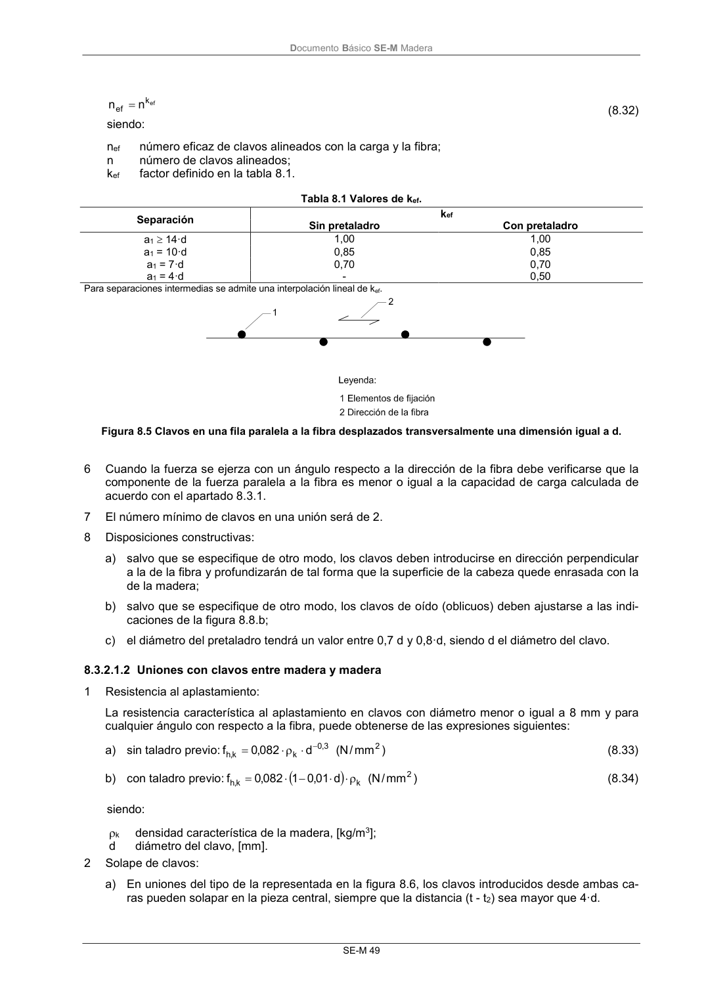

DB-SE-M · 8.3.2.1.2 Uniones con clavos entre madera y madera · versión 2019-12-20 · capa oficial
Formatos: JSON compacto · Markdown · PDF fuente
Ámbito del documento · texto del ámbito · documento y tablas
ID técnico a0112 · PDF pág. 55-57 · jerarquía no validada por persona · contrastado con el literal de la página 55 (candidato tipográfico); no validado por persona · padre: raíz
8.3.2.1.2 Uniones con clavos entre madera y madera 1 Resistencia al aplastamiento: La resistencia característica al aplastamiento en clavos con diámetro menor o igual a 8 mm y para cualquier ángulo con respecto a la fibra, puede obtenerse de las expresiones siguientes: a) sin taladro previo: ) mm / N ( d 082 ,0 f 2 3 , 0 k k,h (8.33) b) con taladro previo: ) mm / N ( d 01 ,0 1 082 ,0 f 2 k k,h (8.34) siendo: k densidad característica de la madera, [kg/m3]; d diámetro del clavo, [mm]. 2 Solape de clavos: a) En uniones del tipo de la representada en la figura 8.6, los clavos introducidos desde ambas ca- ras pueden solapar en la pieza central, siempre que la distancia (t - t2) sea mayor que 4·d. DocumentoBásico SE-M Madera SE-M 50 Figura 8.6 Solape de clavos. 3 Penetración del clavo: a) Como ya se ha comentado, se recomienda una penetración de los clavos, en cada pieza de ma- dera, de entre 10 y 12 diámetros. Con menos penetración se pierde mucha eficacia, y con más no se consigue más capacidad de carga. 4 Clavos en la testa de la pieza: a) Sólo se admite el uso de clavos de fuste liso en la testa de la pieza para el caso de elementos secundarios; como por ejemplo para la fijación de una pieza de cabecero de los pares de una cubierta. El valor de cálculo de su capacidad de carga se tomará igual a 1/3 del valor correspon- diente a un clavado normal. b) En clavos que no son de fuste liso (es decir, con resaltos de distinto tipo; puede verse la defini- ción precisa en la norma UNE-EN 14545:2009) colocados en la testa de la pieza, se tomará co- mo capacidad de carga de cálculo 1/3 del valor correspondiente a un clavado normal, siempre que se cumplan las siguientes condiciones: i) los clavos se encuentran sometidos exclusivamente a carga lateral; ii) al menos existen tres clavos por unión; iii) la penetración en la pieza de punta es como mínimo igual a 10·d; iv) la unión no está expuesta a las condiciones de la clase de servicio 3; v) se cumplen los valores de separación de la tabla 8.2. 5 Separaciones y distancias mínimas: Las separaciones y distancias mínimas se dan en la tabla 8.2, con las definiciones incluidas en la fi- gura 8.7. Tabla 8.2 Uniones con clavos en madera con madera y bajo carga lateral. Separaciones y distancias mínimas. Separaciones y distancias (véase figura 8.7) Ángulo Distancia mínima Sin pretaladro Con pretalado k 420 kg/m3 420 kg/m3 < k 500 kg/m3 a1 (paralela a la fibra) 0º 360º d < 5mm; (5+5cos )d (7+8cos )d (4+cos )d d 5mm; (5+7cos )d a2 (perpendicular a la fibra) 0º 360º 5d 7d (3+sen )d a3,t (testa cargada) - 90º 90º (10+5 cos )d (15+5 cos )d (7+5 cos )d a3,c (testa no cargada) 90º 270º 10d 15d 7d a4,t (borde cargado) 0º 180º d<5 mm; (5+2 sen )d d<5 mm; (7+2 sen )d d<5 mm; (3+2 sen )d d≥5 mm; (5+5 sen )d d≥5 mm; (7+5 sen )d d≥5 mm; (3+4 sen )d a4,c (borde no cargado) 180º 360º 5d 7d 3d DocumentoBásico SE-M Madera SE-M 51 Figura 8.7 Separaciones, distancias y ángulo . 6 Pretaladro: Debe realizarse pretaladrado cuando el espesor de las piezas de madera sea menor que, 400 30 d 13 d 7 max t k (8.35) siendo: t espesor mínimo, [mm]; k densidad característica de la madera, [kg/m3]; d diámetro del clavo, [mm].


PDF fuente redistribuible: copia fiel enlazada en esta página (SHA256 verificado).